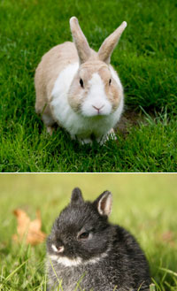

Don't let their small size and cute reputation fool you, rabbitsare a great multi-purpose addition (or beginning) to any 21stcentury homestead. From pets and 4-H projects to terrific sourcesof wool, meat and manure ? backyard rabbits make a fun, easyproject that fulfills a variety of needs. With minimal time, spaceand financial requirements, raising rabbits is a great introductionto homesteading, or, for the more established, a simple way to makea little extra money.
As with most animals, different rabbit breeds are naturallysuited to different purposes. Mini rex is the standard for petrabbits, followed by Dutch, Mini-Lop and Netherland Dwarf. Famousfor their luxurious fur, Angoras are an excellent breed for woolwhile Californian, New Zealand and Giant Chinchilla are bred fortheir tasty, high-quality meat. Regardless of their purpose,rabbits in general produce potent, relatively weed-seed-freemanure. The average rabbit will generate 1 pound of manure perweek, or about 50 pounds each year! Less likely than some othermanures to burn your plants, it makes great fertilizer and is agood choice for plants that need heavy feeding, such as roses andazaleas.
Rabbits have basic needs ? shelter, food and water, and a cozyplace to nest. If you're adopting a couple of pet rabbits, the mosteconomical approach is to purchase a hutch, since you'll need justone habitat. Building two or more, however, generally costs lessthan purchasing multiple pre-made models, and building is as quietand simple as the critters you're building for. Basic carpentryskills are sufficient for constructing the feeder, nesting box,watering device and wire hutch (wire is light and durable, and therabbits will soil and gnaw on a wood hutch). With a few materialsand regular household tools you'll be well on your way to asuccessful rabbit enterprise!
You can learn more about building a wire rabbit hutch in thise-handbook from Mother Earth News. It offers detailedhutch-building instructions, plus tips for creating the best livingspace for your rabbits and a great guide to additional sources.
Do you raise rabbits for food, meat, manure or even just forfun? Share your tips and stories by posting a comment below.
|
 Dutch (top) and Netherland dwarf (bottom) rabbits make cute, quiet and inexpensive pets for kids and adults. |
|
|